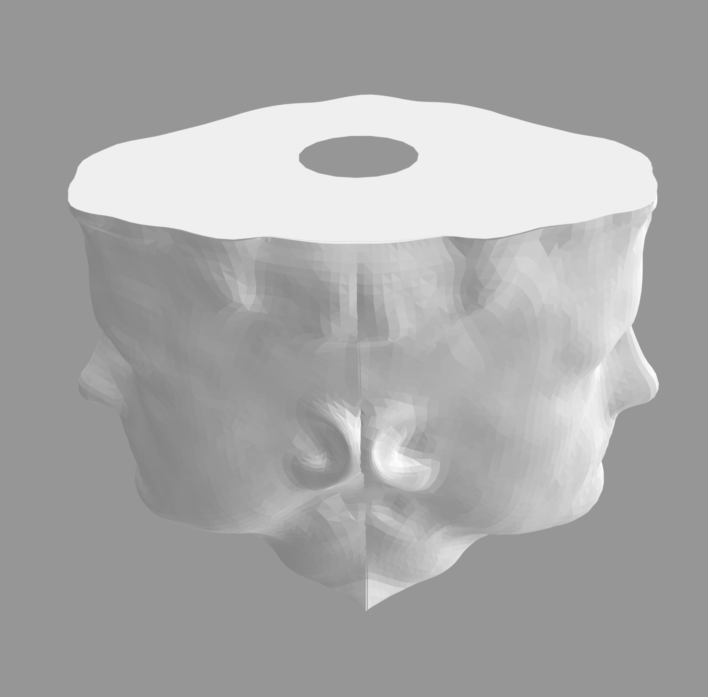
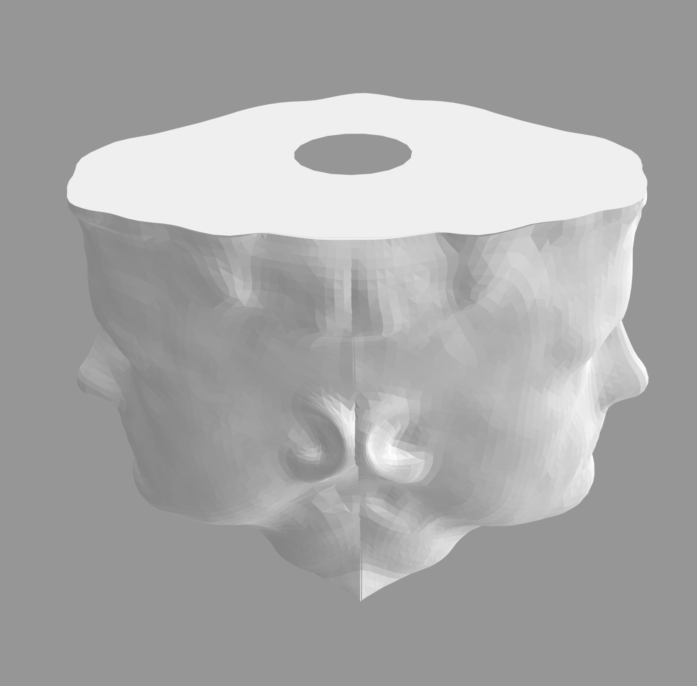

Steps
Phone stand

Computer stand

Headphone stand


I started off with this terrifying drawing:

Which resulted in the following STL:

 

Resources
Merged headphone stand 3dm
Merged headphone stand stl
Lamp preliminary stl
External resources:Video conversion
Rhino documentation
Rhino wiki
Boolean modifier problems and how to solve them
Polycam iOS app
Reddit posts: 1 , 2 , 3 , 4 , 5 , 6 , 7 , 8 , 9 , 10 , 11 , 12 13
Thanks to the various posts in the Discord channel for the help! Especially for posts from Junchao about Rhino commands.